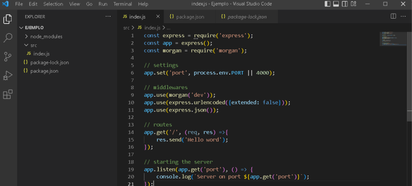

Este ejemplo muestra los pasos y el resultado para la creación de un API rest con Node.js
Primero abrimos visual Studio Code, y abrimos nuestra carpeta del proyecto. Abrimos un nuevo terminal integrado, que abre la consola en dirección a nuestro proyecto, en el que digitamos “npm init --yes” que crea un package.json que permite describir el proyecto.
Luego debemos instalar dos módulos que permiten crear el servidor
Dentro de la carpeta del proyecto creamos una nueva carpeta con el nombre src en el que creamos un archivo llamado index.js en el que codificamos los siguiente:
Ahora cuando visitamos la ruta http://localhost:3000 podemos ver lo siguiente